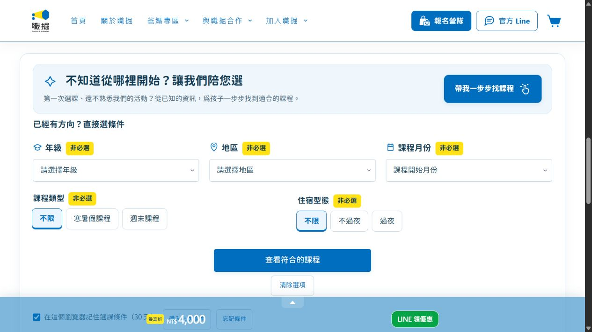

回到所有作品
職掘 · 網站建置與營運工具
把課程上架、選購與訂單接起來
服務型商品需要先被理解，才容易選購。我整理內容與購買流程，讓課程能在線上展示、篩選和結帳。
24合作案例頁
5選課篩選維度
35出貨資料欄位
我負責什麼
整理照片與約 20 筆商品資料，用 AI 協作建立 WordPress 批次上架工具，並整理課程內容、篩選條件與購買流程。
我延續網站既有的視覺設計，將營運需要的功能接起來。

開啟實際網站職掘商店實際畫面 · 年級、地區、月份、類型與住宿條件
做了哪些功能
- 找課程：提供 5 種篩選條件與 4 步選課引導。
- 整理內容：建立 4 種建置範本，讓合作案例與商品上架格式更一致。
- 處理訂單：整合收件、付款、發票與 2 類訂單同步，加入付款驗證與重複開票防護。